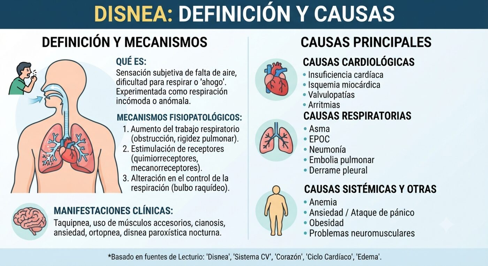
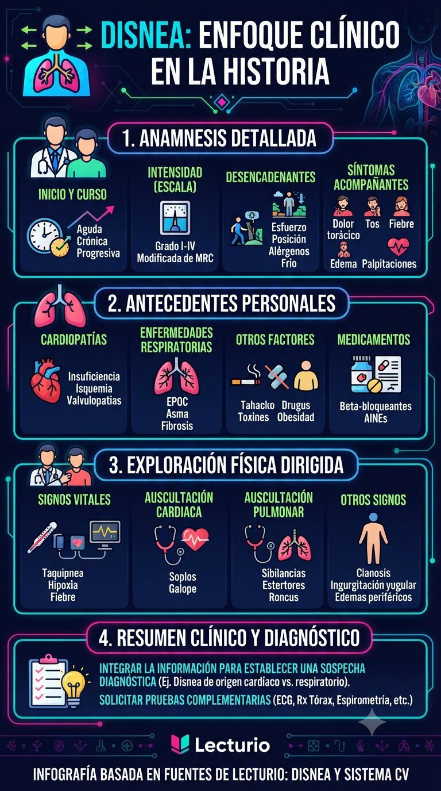
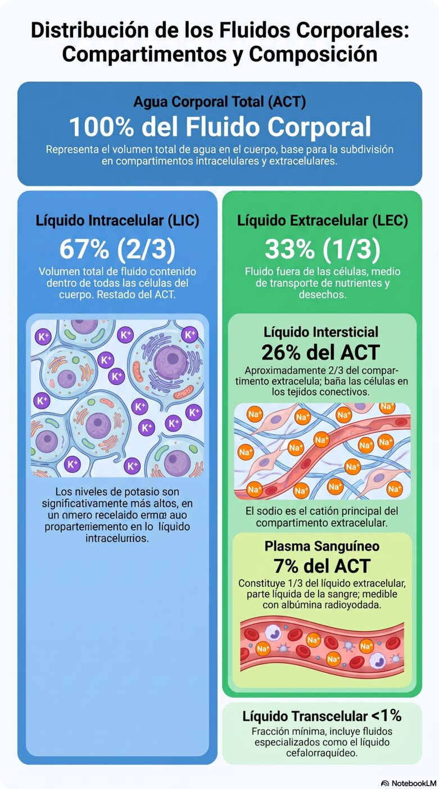
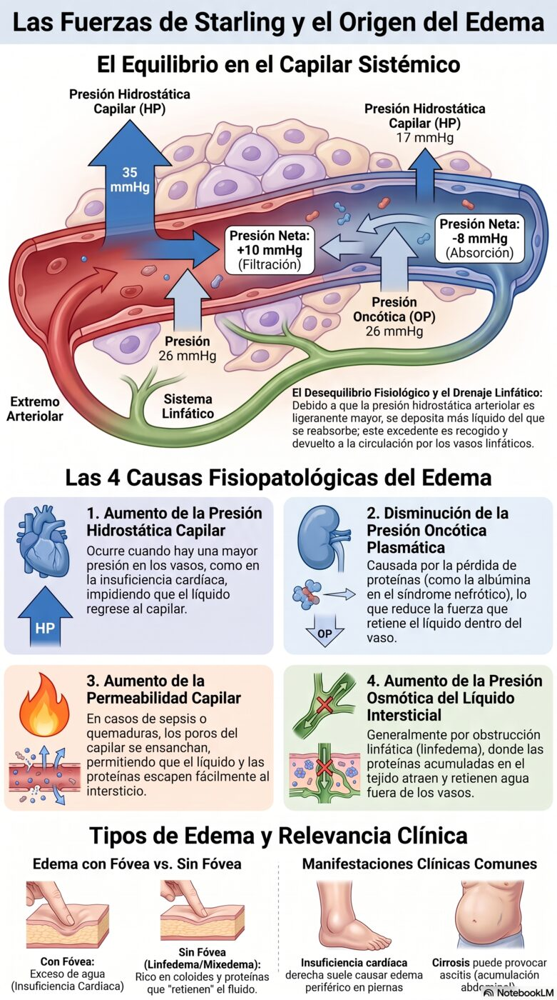
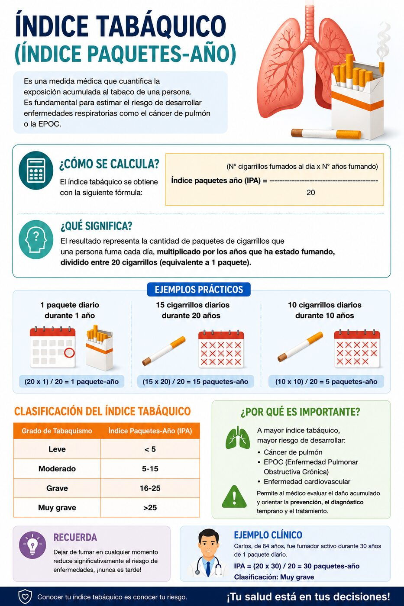
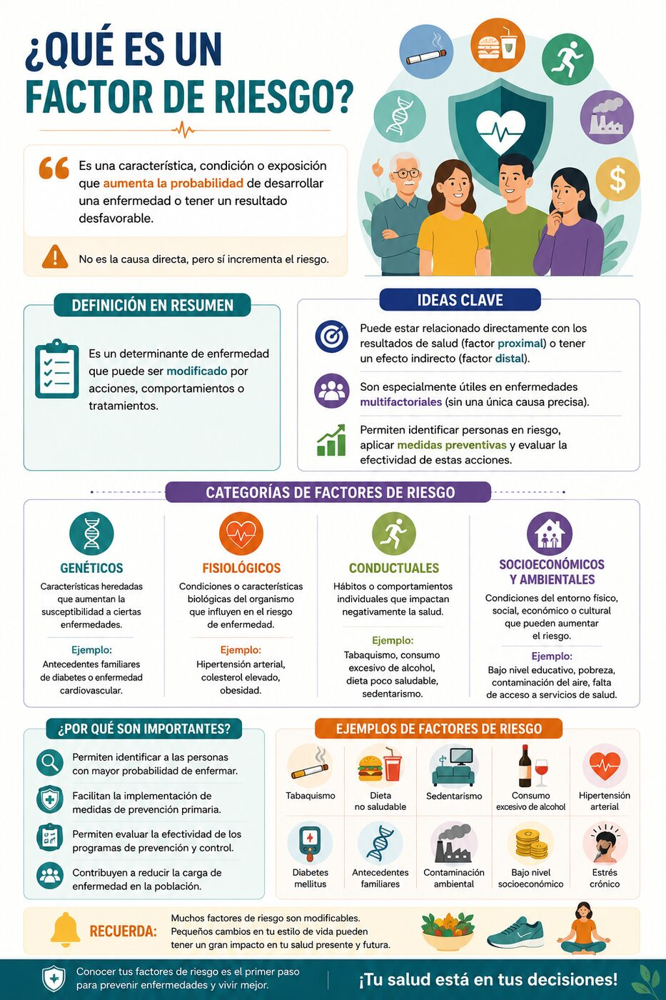
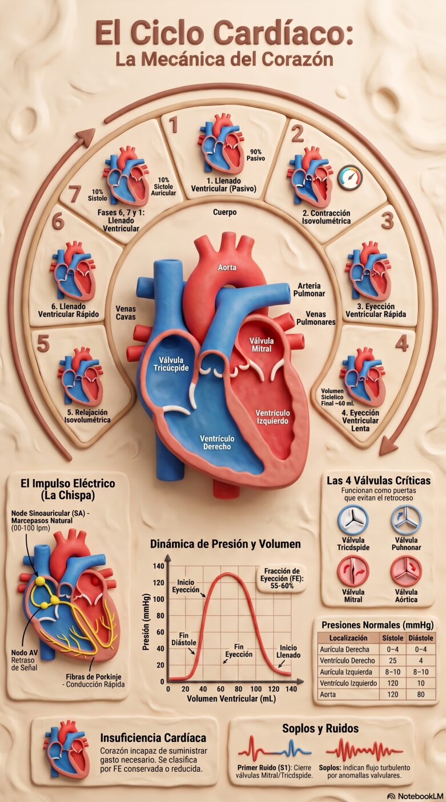
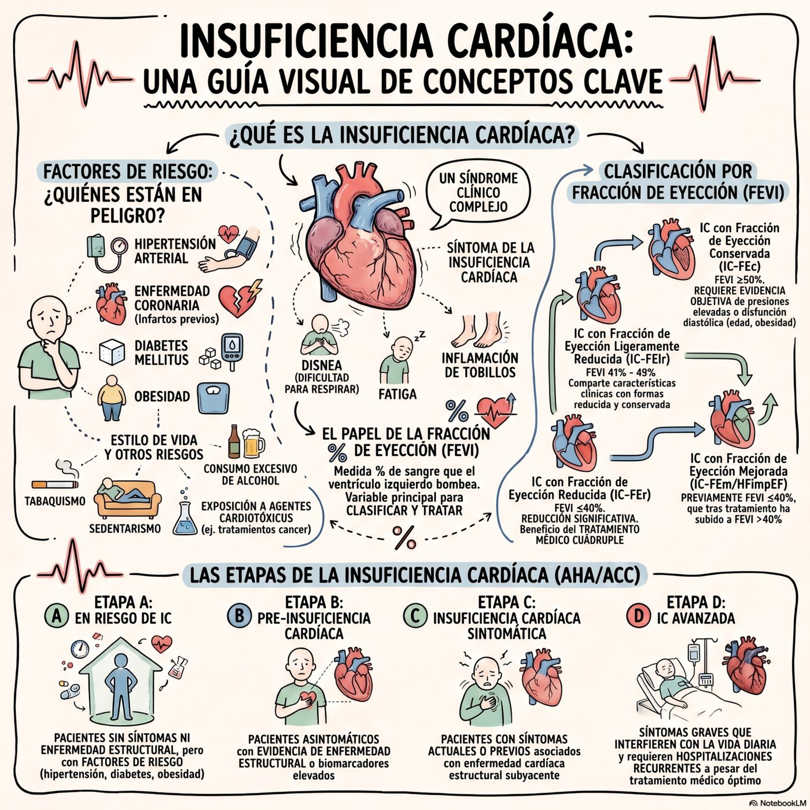
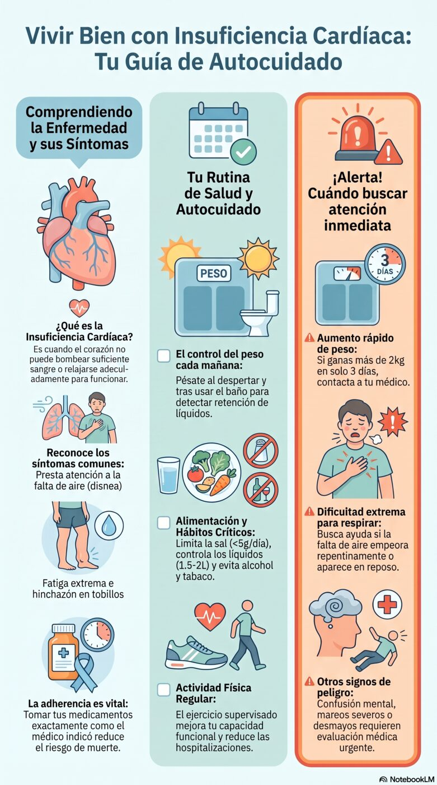

Conoce primero a Carlos, un paciente de 84 años con disnea y edema. Después vas a repasar los conceptos y la enfermedad que explican su caso.
Avanza paso a paso. En cada punto vas a responder algo antes de conocer el siguiente dato, igual que en una consulta real. No te preocupes si no conoces todavía cada mecanismo a fondo: los vas a repasar justo después.
Vive en zona rural de Tenjo, Cundinamarca, con su esposa. Consulta acompañado de su hija.
Carlos es un adulto mayor de 84 años. Vive en un área rural del municipio de Tenjo, Cundinamarca con su esposa. Asiste con una de sus hijas al centro de salud. Consulta por disnea y edema de miembros inferiores. Tiene antecedentes de Diabetes Mellitus Tipo 2 e Infarto Agudo de Miocardio hace 5 años. Además, tiene antecedente de Tabaquismo, en el momento no activo.
Estos son los conceptos que necesitas dominar para explicar por completo lo que le pasa a Carlos: disnea, fluidos corporales, edema, tabaquismo y factores de riesgo.






Carlos tuvo un infarto hace 5 años. Ese evento dejó una cicatriz en su corazón que, con el tiempo, derivó en insuficiencia (falla) cardíaca: el corazón ya no bombea con la fuerza suficiente para satisfacer las demandas del cuerpo.
Después de un infarto, el tejido muscular dañado es reemplazado por tejido fibroso, que no se contrae. Esto reduce la fracción de eyección y desencadena mecanismos compensatorios (activación simpática, activación del sistema renina-angiotensina-aldosterona) que, sostenidos en el tiempo, terminan empeorando la función cardíaca. Así se explica el ciclo que llevó a Carlos, paso a paso, hasta la consulta de hoy.



Se agregará aquí en cuanto subas el archivo de audio generado en NotebookLM (.mp3 o .wav).
30 preguntas cronometradas que integran el caso de Carlos con la anatomía, histología y fisiología de esta semana.